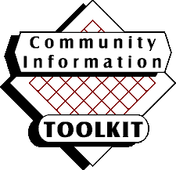

Community Information ToolKit
Toolkit Recipients
The Community Information Toolkit is being distributed to
the following Michigan agencies. This page contains the complete
list, organized by the following four agency types. To print
the complete list, print this page.
Library Cooperatives
Capital Library Cooperative
Ms. Ann C. Holt
4061 Holt Road
Holt MI 48842
Detroit Associated Libraries
Dr. Maurice B. Wheeler
12244 Woodward Avenue
Highland Park MI 48203-3320
Hiawathaland Library Cooperative
Ms. Janus R. Storey
541 Library Drive
Sault Ste. Marie MI 49783-2147
Lakeland Library Cooperative
Mr. Daniel J. Siebersma
4138 Three Mile Road, N.E.
Grand Rapids MI 49544-1134
Library Cooperative of Macomb
Ms. Tammy L. Turgeon
16480 Hall Road
Clinton Township MI 48038-1132
Mid-Michigan Library League
Mr. Stephen C. Dix
411 South Lake Street
P.O. Box 700
Cadillac MI 49601-0700
Mid-Peninsula Library Cooperative
Ms. Barbara J. Brewer
1525 Pyle Drive
Kingsford MI 49802
Mideastern Michigan Library Cooperative
Mr. Roger Mendel
503 South Saginaw Street
Suite 839
Flint MI 48502
Northland Library Cooperative
Ms. Rebecca Erwin Cawley
316 East Chisholm Street
Alpena MI 49707-2822
Southwest Michigan Library Cooperative
Dr. Alida L. Geppert
305 Oak Street
Paw Paw MI 49079-1364
Superiorland Library Cooperative
Ms. Suzanne H. Dees
1615 Presque Isle Avenue
Marquette MI 49855-2811
The Library Network
Mr. A. Michael Deller
13331 Reeck Road
Southgate MI 48195
White Pine Library Cooperative
Ms. Martha Seaman McKee
3210 Davenport
Saginaw MI 48602
Woodlands Library Cooperative
Mr. James C. Seidl
415 South Superior Street
Suite A
Albion MI 49224-2135
ROCs (Regions of Cooperation)
Capital Area Library Network, Inc.
Ms. Ann C. Holt
4061 Holt Road
Holt MI 48842
Detroit Associated Libraries Region of Cooperation
Mr. James W. Lawrence
5201 Woodward Avenue
Detroit MI 48202-4007
Lakenet Region of Multitype Cooperation
Mr. Lee J. Lebbin
James H. Zumberge Library
1 Campus Drive
Allendale MI 49401-9403
Macomb Region of Cooperation
Ms. Tammy L. Turgeon
16480 Hall Road
Clinton Township MI 48038-1140
Mid-Michigan Library League of Cooperation
Mr. Stephen C. Dix
411 South Lake Street
Box 700
Cadillac MI 49601-2101
Mideastern Michigan Region of Cooperation
Marian Hesse
503 South Saginaw
Suite 839
Flint MI 48502
Northland Interlibrary System
Ms. Rebecca Erwin Cawley
316 East Chisholm Street
Alpena MI 49707-2892
Oakland Washtenaw Wayne Livingston St. Clair Library Network
Ms. Eileen Palmer
The Library Network
13331 Reeck Road
Southgate MI 48195
Southern Michigan Region of Cooperation
Mr. James C. Seidl
415 South Superior Street
Suite A
Albion MI 49224-2135
Southwest Michigan Library Cooperative Region of Cooperation
Mr. James C. Seidl
305 Oak Street
Paw Paw MI 49079-1364
Upper Peninsula Region of Library Cooperation
Ms. Suzanne H. Dees
1615 Presque Isle Avenue
Marquette MI 49855-2811
White Pine Library Network
Ms. Martha Seaman McKee
3210 Davenport
Saginaw MI 48602
Class 6 Libraries
Ann Arbor District Library
Ms. Mary Anne Hodel
343 South Fifth Avenue
Ann Arbor MI 48104-2293
Bay County Library System
Ms. Linda Heemstra
307 Lafayette Street
Bay City MI 48708-7796
Canton Public Library
Ms. Jean M. Tabor
1200 South Canton Center Road
Canton MI 48188-1600
Capital Area District Library
Ms. Susan J. Hill
Administrative Offices
401 South Capitol Avenue
Lansing MI 48933
Chippewa River District Library
Ms. Susan J. Hill
Veterans Memorial Library
301 South University
Mt. Pleasant MI 48858-2524
Clinton-Macomb Public Library
Ms. Christine Lind Hage
43245 Garfield
Clinton Township MI 48038-1115
Dearborn Public Library
Mr. R. Patrick Coady
Henry Ford Centennial Library
16301 Michigan Avenue
Dearborn MI 48126-2792
Detroit Public Library
Dr. Maurice B. Wheeler
5201 Woodward Avenue
Detroit MI 48202-4007
East Lansing Public Library
Ms. Sylvia L. Marabate
950 Abbott Road
East Lansing MI 48823-3105
Farmington Community Library
Ms. Beverly D. Papai
32737 West Twelve Mile Road
Farmington Hills MI 48334-3302
Flint Public Library
Ms. Gloria J. Coles
1026 East Kearsley Street
Flint MI 48502-1994
Genesee District Library
Ms. Valerie McNiff
G-4195 West Pasadena Avenue
Flint MI 48504-2375
Grace A. Dow Memorial Library
Mr. James B. Alsip
1710 West Saint Andrews Road
Midland MI 48640-2698
Grand Rapids Public Library
Mr. Robert E. Raz
60 Library Plaza, N.E.
Grand Rapids MI 49503-3093
Grosse Pointe Public Library
Ms. Vickey J. Bloom
10 Kercheval Avenue
Grosse Pointe Farms MI 48236-3693
Herrick District Library
Mr. Robert L. Sherwood
300 South River Avenue
Holland MI 49423-3247
Jackson District Library
Ms. Bescye P. Burnett
244 West Michigan Avenue
Jackson MI 49201-2275
Kalamazoo Public Library
Mr. Saul J. Amdursky
315 South Rose Street
Kalamazoo MI 49007-5270
Kent District Library
Ms. Claudya B. Muller
775 Ball Avenue, N.E.
Grand Rapids MI 49503-1397
Livonia Public Library
Ms. Claudya B. Muller
Livonia Civic Center Library
32777 Five Mile Road
Livonia MI 48154-3045
Monroe County Library System
Mr. James F. Warwick
3700 South Custer Road
Monroe MI 48161-9732
Muskegon County Library
Ms. Elizabeth Winsche
97 East Apple Avenue
Muskegon MI 49442
Pontiac Public Library
Mr. David G. Tacia
60 East Pike Street
Pontiac MI 48342-2225
Public Libraries of Saginaw
Mr. Norman L. Maas
Administrative Offices
505 Janes Street
Saginaw MI 48607-1285
Redford Township District Library
Mr. Frederick J. Paffhausen
15150 Norborne
Redford MI 48239-3226
Rochester Hills Public Library
Ms. Sandra L. Matsco
500 Olde Towne Road
Rochester MI 48307-2043
Roseville Public Library
Ms. Rose M. Kollmorgen
29777 Gratiot Avenue
Roseville MI 48066-4198
Royal Oak Public Library
Ms. Carol Windorf
222 East Eleven Mile Road
P.O. Box 494
Royal Oak MI 48068-0494
Southfield Public Library
Mr. Douglas A. Zyskowski
26000 Evergreen Road
P.O. Box 2055
Southfield MI 48076-2055
St. Clair County Library
Mr. Stanley K. Arnett
210 McMorran Boulevard
Port Huron MI 48060-4098
St. Clair Shores Public Library
Mr. Arthur M. Woodford
22500 Eleven Mile Road
St. Clair Shores MI 48081-1399
Sterling Heights Public Library
Ms. Carol Lingeman
40255 Dodge Park Road
Sterling Heights MI 48313-4140
Traverse Area District Library
Mr. Michael L. McGuire
610 Woodmere
Traverse City MI 49684-2499
Troy Public Library
Mr. Brian Stoutenburg
510 West Big Beaver Road
Troy MI 48084-5289
Warren Public Library
Mr. Wlodzimierz A. Zaryczny
5951 Beebe Avenue
Warren MI 48092-1604
Waterford Township Public Library
Ms. Nancy J. Smith
5168 Civic Center Drive
Waterford MI 48329-3713
Wayne County Public Library
Ms. Ruth P. (Pat) Klemans
30555 Michigan Avenue
Westland MI 48186-5310
West Bloomfield Township Public Library
Ms. Clara N. Bohrer
4600 Walnut Lake Road
West Bloomfield MI 48323-2557
Willard Library
Mr. Richard A. Hulsey
7 West Van Buren Street
Battle Creek MI 49017-3009
William P. Faust Public Library of Westland
Ms. Sandra L. Wilson
6123 Central City Parkway
Westland MI 48185-9118
Ypsilanti District Library
Ms. Margaret L. Angelini
229 West Michigan Avenue
Ypsilanti MI 48197-5485
REMCs (Regional Educational Media Centers)
REMC 1
Dan Sternhagen
602 Hecla Street
P. O. Box 270
Hancock MI 49930-0270
REMC 10
Mr. Timothy K. von Hoff
4415 South Seeger Street
Cass City MI 48726-1442
REMC 11
James Bembenek
711 Saint Joseph Avenue
Berrien Springs MI 49103-1602
REMC 12 East
Nancy Davis
Calhoun ISD
17111 G Drive North
Marshall MI 49068-9621
REMC 12 West
J. Mark Rainey
1819 East Milham Road
Kalamazoo MI 49002-3035
REMC 13
Susan Schwartz
611 Hagadorn Road
Mason MI 48854-1644
REMC 14
Susan Schwartz
Genesee ISD
2413 West Maple Avenue
Flint MI 48507-3429
REMC 15
Robert Hayhurst
Jackson County ISD
6700 Browns Lake Road
Jackson MI 49201-8323
REMC 16
Robert Hayhurst
1819 South Wagner Road
P.O. Box 1406
Ann Arbor MI 48103-9715
REMC 17
Robert Hayhurst
2100 Pontiac Lake Road
Waterford MI 48328-2735
REMC 18
Robert Hayhurst
Beal Professional Library, Macomb Intermediate School District
44001 Garfield Road
Clinton Township MI 48038-1100
REMC 19
Robert Hayhurst
2946 Sutton Road
Adrian MI 49221
REMC 19 East
Pete G. Finney
1101 South Raisinville
Monroe MI 48161
REMC 2 Central
Stephen M. Norvilitis
880 Parsons Road
Traverse City MI 49686
REMC 2 North
Stephen M. Norvilitis
Charlevoix Emmett I.S.D. Media Center
8568 Mercer Road
Charlevoix MI 49720-1006
REMC 2 South
Don Moore
Wexford Missaukee ISD
9905 East 13th Street (36 Rd)
Cadillac MI 49601
REMC 20
Ronald Sniderman
Wayne County Resa, 33500 Van Born Road
P.O. Box 807
Wayne MI 48184
REMC 21
Betty Burke-Coduti
427 West College Ave.
Marquette MI 49855-2674
REMC 22
John F. Thompson
Eastern Upper Peninsula ISD
P.O. Box 883
Sault Ste. Marie MI 49783
REMC 3
John F. Thompson
6065 Learning Lane
Indian River MI 49749-9357
REMC 4
John F. Thompson
Muskegon Area ISD
630 Harvey Street
Muskegon MI 49442-2309
REMC 5
Deborah Dunbar
1131 East Center Street
P.O. Box 310
Ithaca MI 48847-0310
REMC 6
Dr. Faye DeMarte
4228 Two Mile Road
Bay City MI 48706-2324
REMC 7
Ms. Cynthia Kleinheksel
13565 Port Sheldon Street
Holland MI 49424-9241
REMC 8
Connie Solis
2930 Knapp Street, N.E.
Grand Rapids MI 49525-4618
REMC 9
John Tanner
6235 Gratiot Road
Saginaw MI 48603-5951
Return Home |